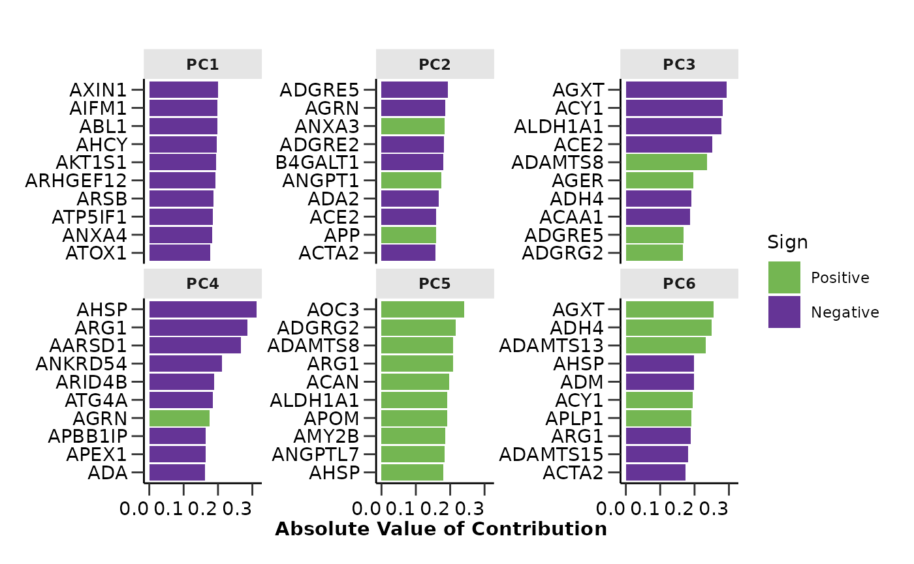

This vignette will guide you through the initial steps of a proteomics pipeline, which is the exploratory data analysis. Except from HDAnalyzeR we will import viridis for the color palettes.
üìì This vignette is just a basic example of how to explore the data and perform dimensionality reduction to identify potential issues and trends. However, every dataset is different and may require different exploration techniques other than the ones contained in the package.
⚠️ Please make sure to preprocess the data and metadata before proceeding with the analysis. For the most common proteomics data formats, we provide some recommendations in the package documentation under articles “Data Preparation for HDAnalyzeR: What You Need Before Using the Package”.
Loading the Data
Let’s start with loading the example data and metadata that come with the package and initialize the HDAnalyzeR object.
hd_obj <- hd_initialize(dat = example_data,
metadata = example_metadata,
is_wide = FALSE,
sample_id = "DAid",
var_name = "Assay",
value_name = "NPX")Exploratory Data Analysis
Now, we will perform an automated exploratory data analysis (QC
check) on the data. hd_qc_summary() will return the
percentage of missing values for each column and row and histograms of
their distributions both for data and metadata, the variable-variable
(in this case protein-protein) correlation and the metadata variable
distributions.
⚠️ This should not be confused with the quality control of the data, which is a different process that is usually performed right after the proteomics experiments. The exploratory data analysis is a first step to understand the data and identify potential issues.
As variable we should pass the column name of the
metadata that contains the different classes, for example the case and
control groups, the different diseases, or the different stages of a
disease. The palettes are optional and can be used to color the plots of
the metadata variable distributions. You should pass a list with the
variable name and the palette name, for example list(Sex = c(“F” =
“red”, “M” = “blue”), Disease = “cancers12”). As you can see, the
palettes can be either a named vector or a character vector with the
name of a palette from the package. You can display all available
HDAnalyzeR palettes by running hd_show_palettes().
qc_data <- hd_qc_summary(hd_obj,
variable = "Disease",
palette = list(Disease = "cancers12", Sex = "sex"),
cor_threshold = 0.7)
#> [1] "Summary:"
#> [1] "Note: In case of long output, only the first 10 rows are shown. To see the rest display the object with view()"
#> [1] "Number of samples: 586"
#> [1] "Number of variables: 101"
#> [1] "--------------------------------------"
#> [1] "categorical : 1"
#> [1] "continuous : 100"
#> [1] "--------------------------------------"
#> [1] "NA percentage in each column:"
#> # A tibble: 91 × 2
#> column na_percentage
#> <chr> <dbl>
#> 1 ACE2 6.1
#> 2 ACTA2 6.1
#> 3 ACTN4 6.1
#> 4 ADAM15 6.1
#> 5 ADAMTS16 6.1
#> 6 ADH4 6.1
#> 7 AKR1C4 6.1
#> 8 AMBN 6.1
#> 9 AMN 6.1
#> 10 AOC1 6.1
#> # ℹ 81 more rows
#> [1] "--------------------------------------"
#> [1] "NA percentage in each row:"
#> # A tibble: 144 × 2
#> DAid na_percentage
#> <chr> <dbl>
#> 1 DA00450 57.4
#> 2 DA00482 53.5
#> 3 DA00542 53.5
#> 4 DA00003 50.5
#> 5 DA00463 46.5
#> 6 DA00116 43.6
#> 7 DA00475 42.6
#> 8 DA00578 42.6
#> 9 DA00443 41.6
#> 10 DA00476 35.6
#> # ℹ 134 more rows
#> [1] "--------------------------------------"
#> [1] "Protein-protein correlations above 0.7:"
#> Protein1 Protein2 Correlation
#> 1 ATP5IF1 AIFM1 0.76
#> 2 AXIN1 ARHGEF12 0.76
#> 3 AIFM1 ATP5IF1 0.76
#> 4 ARHGEF12 AXIN1 0.76
#> 5 ARHGEF12 AIFM1 0.71
#> 6 AIFM1 ARHGEF12 0.71
#> [1] "--------------------------------------"
#> [1] "Summary:"
#> [1] "Note: In case of long output, only the first 10 rows are shown. To see the rest display the object with view()"
#> [1] "Number of samples: 586"
#> [1] "Number of variables: 9"
#> [1] "--------------------------------------"
#> [1] "categorical : 7"
#> [1] "continuous : 2"
#> [1] "--------------------------------------"
#> [1] "NA percentage in each column:"
#> # A tibble: 1 × 2
#> column na_percentage
#> <chr> <dbl>
#> 1 Grade 91.5
#> [1] "--------------------------------------"
#> [1] "NA percentage in each row:"
#> # A tibble: 536 × 2
#> DAid na_percentage
#> <chr> <dbl>
#> 1 DA00001 11.1
#> 2 DA00002 11.1
#> 3 DA00003 11.1
#> 4 DA00004 11.1
#> 5 DA00005 11.1
#> 6 DA00006 11.1
#> 7 DA00007 11.1
#> 8 DA00008 11.1
#> 9 DA00009 11.1
#> 10 DA00010 11.1
#> # ℹ 526 more rows
#> [1] "--------------------------------------"
qc_data$data_summary$na_col_hist
qc_data$data_summary$na_row_hist
qc_data$data_summary$cor_heatmap
qc_data$metadata_summary$na_col_hist
qc_data$metadata_summary$na_row_hist
qc_data$metadata_summary$Sex
qc_data$metadata_summary$Stage
qc_data$metadata_summary$Age
qc_data$metadata_summary$BMI
From the EDA results we can see that all assays have less than 10%
missing values, while only a few samples have more than 20% missing
values. The protein-protein correlation plot shows that there are no
extremely highly correlated proteins. Also, the metadata variable
Stage has a high percentage of missing values that are not
correctly stated as NA values but as “” or “Unknown”. These are only a
few examples of the information that we can extract from the EDA
results.
Based on these we can take decisions on filtering samples with high missing values, excluding whole assays and metadata variables from statistical analysis.
Dimensionality Reduction
Finally we will run a PCA and UMAP analysis on the data to check if
the data contain any outliers or cluster in an unexpected way. From the
PCA analysis we can also check how the variance in the data is explained
by the different principal components. In this example, we will color
the PCA plot based on Disease, while the UMAP plot based on
Age.
The hd_pca() and hd_umap() functions will
run the respective analysis while the hd_plot_dim() will
plot the data on a 2D plane. For the PCA analysis we can also use
hd_plot_pca_loadings() and
hd_plot_pca_variance() to plot the loadings of the
different proteins on the principal components and the variance
explained by each principal component respectively.
In the hd_plot_dim() function we can pass the
color parameter to color the data points based on a
metadata variable. We should not forget to pass again the hd_obj object
to the metadata argument so the package can search the
metadata and identify the color variable.
pca_res <- hd_pca(hd_obj, components = 15) |>
hd_plot_dim(hd_obj, "PC1", "PC2", color = "Disease", palette = "cancers12", axis_variance = TRUE) |>
hd_plot_pca_loadings(displayed_pcs = 6, displayed_features = 10) |>
hd_plot_pca_variance()
head(pca_res$pca_res)
#> # A tibble: 6 × 16
#> DAid PC1 PC2 PC3 PC4 PC5 PC6 PC7 PC8 PC9 PC10
#> <chr> <dbl> <dbl> <dbl> <dbl> <dbl> <dbl> <dbl> <dbl> <dbl> <dbl>
#> 1 DA00… -3.67 -4.28 -2.34 -3.10 -2.65 -2.73 -2.78 0.433 -3.23 -0.399
#> 2 DA00… 4.11 -2.64 2.04 -0.441 -4.43 -1.91 -0.897 1.54 -0.283 0.166
#> 3 DA00… -3.34 4.72 1.41 0.881 -0.561 0.308 -0.0612 -0.267 1.42 0.0840
#> 4 DA00… -4.78 0.443 1.41 0.107 -1.10 -0.262 0.350 3.33 -0.336 -0.748
#> 5 DA00… -4.98 -3.67 0.711 -5.70 -0.807 -3.77 -0.969 1.83 -1.29 -0.991
#> 6 DA00… 0.395 0.0572 -1.90 -7.75 0.707 -2.70 -0.681 0.301 -0.486 1.32
#> # ℹ 5 more variables: PC11 <dbl>, PC12 <dbl>, PC13 <dbl>, PC14 <dbl>,
#> # PC15 <dbl>
pca_res$pca_plot
pca_res$pca_loadings_plot
pca_res$pca_variance_plotThis time we want to color based on a continuous variable, the
Age. In this case, we can either bin the data into
categories using hd_bin_columns() and use a categorical
palette as before or use a continuous color palette directly after the
plot is created. We will do the second by setting the palette argument
to NULL and using the viridis palette afterwards.
umap_res <- hd_umap(hd_obj, components = 2) |>
hd_plot_dim(hd_obj, "UMAP1", "UMAP2", color = "Age", palette = NULL)
umap_res$umap_plot + scale_color_viridis()
We can also run a UMAP where the data points are Proteins (or any
feature) instead of samples. The only thing we need to do is to set the
by_sample parameter to FALSE and pass the
Assay column as the plot_color parameter. We
can also pass a custom palette to color the different assays. This time
we will use the wrapper function hd_auto_umap(). The
wrapper functions are a bit less flexible but they are easier to use and
require less code.
umap_res <- hd_auto_umap(hd_obj,
by_sample = FALSE,
plot_color = "Assay",
plot_palette = c("ADA" = "darkblue",
"ABL1" = "red3",
"ACAN" = "green3"))
head(umap_res$umap_res)
#> # A tibble: 6 × 3
#> Assay UMAP1 UMAP2
#> <chr> <dbl> <dbl>
#> 1 AARSD1 3.31 -2.38
#> 2 ABL1 1.52 -1.85
#> 3 ACAA1 0.238 -1.50
#> 4 ACAN -0.289 1.69
#> 5 ACE2 -0.307 -0.731
#> 6 ACOX1 -2.58 1.23
umap_res$umap_plot
üìì Remember that these data are a dummy-dataset with artificial data and the results in this guide should not be interpreted as real results. The purpose of this vignette is to show you how to use the package and its functions.